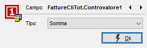

In questa finestra è possibile definire il tipo di raggruppamento per ogni campo presente sulla statistica.

Con le frecce si passa da un campo all'altro e le tipologie di raggruppamento sono le seguenti:
Raggruppamento: indica di effettuare il raggruppamento con il campo selezionato.
Somma: indica di generare un campo contenente il risultato della somma del valore del campo selezionato.
Max: indica di generare un campo contenente il valore massimo del campo selezionato.
Min: indica di generare un campo contenente il valore minimo del campo selezionato.
Media: indica di generare un campo contenente il valore medio del campo selezionato.
Conteggio: indica di generare un campo contenente il numero di volte che il campo selezionato è stato elaborato.